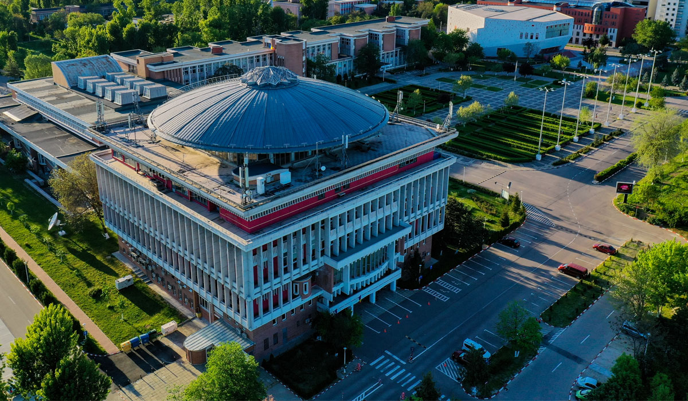
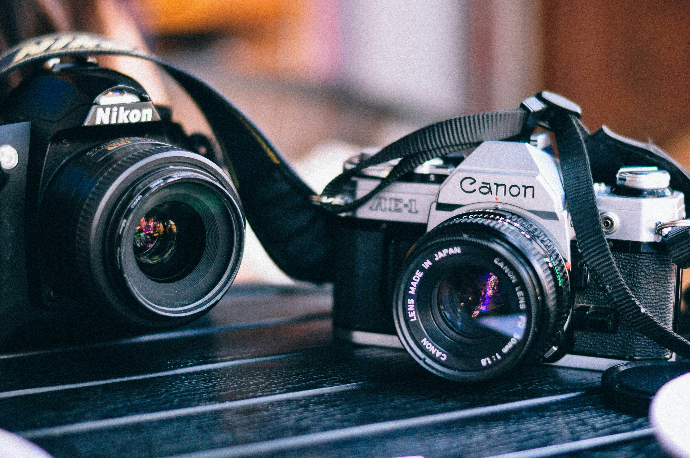

Francisc-Eduard Andăr
IT & Fotografie
Sunt Andăr Francisc-Eduard, am 20 de ani și am creat acest site pentru a mă prezenta într-un mod clar și profesionist. Aici veți găsi informații despre parcursul meu educațional și competențele mele.
Despre mine

Educație
Facultatea de Automatică și Calculatoare, UNSTPB
Liceul Greco-Catolic "Timotei Cipariu"
Competențe
C
C++
HTML
CSS
LaTeX
SQL
Lightroom
Arduino

Hobby principal: Fotografia
Fotografia este modul meu de a surprinde lumea. De la peisaje urbane la portrete, încerc să spun o poveste prin fiecare cadru.
Vezi PortofoliuAlte Pasiuni
- Drumeții montane
- Camping
- Schi
- Chitară